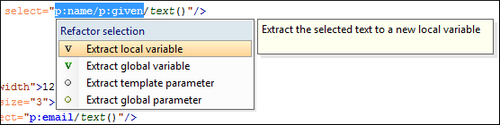

XSLT Quick Assist Support
The Quick Assist support helps you
to rapidly access search and refactoring actions. If one or more actions are available in the
current context, they are accessible via a yellow bulb help ( ) placed at the current line in the stripe on the left side
of the editor. Also, you can invoke the Quick Assist menu by using the Alt + 1
(Meta + Alt +
1 on Mac OS X) keyboard shortcuts.
) placed at the current line in the stripe on the left side
of the editor. Also, you can invoke the Quick Assist menu by using the Alt + 1
(Meta + Alt +
1 on Mac OS X) keyboard shortcuts.
Two categories of actions are available in the Quick Assist menu:
-
Actions available on a selection made inside an attribute that contains an XPath expression:
- Extract template
- Extracts the selected XSLT instructions sequence into a new template.
- Move to another stylesheet
- Allows you to move one or more XSLT global components (templates, functions, or parameters) to another stylesheet.
- Extract local variable
- Allows you to create a new local variable by extracting the selected XPath expression.
- Extract global variable
- Allows you to create a new global variable by extracting the selected XPath expression.
- Extract template parameter
- Allows you to create a new template parameter by extracting the selected XPath expression.
- Extract global parameter
- Allows you to create a new global parameter by extracting the selected XPath expression.
Figure 1. XSLT Quick Assist Support - Refactoring Actions  -
Actions available when the cursor is positioned over the name of a component:
 Rename Component
in
Rename Component
in- Renames the component and all its dependencies.
 Search
Declarations
Search
Declarations- Searches the declaration of the component in a predefined scope. It is available only when the context represents a component name reference.
 Search
References
Search
References- Searches all references of the component in a predefined scope.
 Component
Dependencies
Component
Dependencies- Searches the component dependencies in a predefined scope.
 Change
Scope
Change
Scope- Configures the scope that will be used for future search or refactor operations.
- Rename
Component
- Allows you to rename the current component in-place.
 Search
Occurrences
Search
Occurrences- Searches all occurrences of the component within the current file.